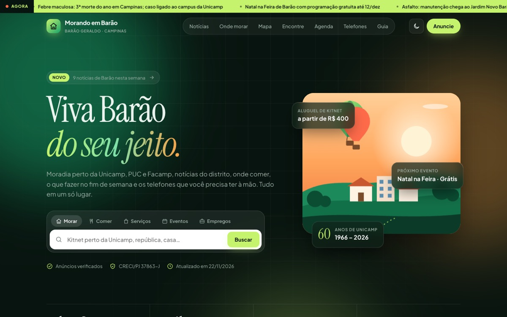
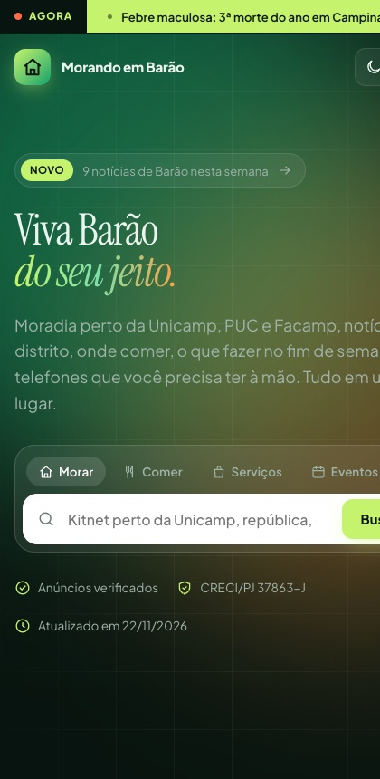

Desenvolvedor web · Campinas, SP
Desenvolvedor em transição, com background em infraestrutura. Construo sites e aplicações com JavaScript, Node.js, MySQL e Cloud, rápidos, simples e prontos para o mundo real.
Mova o cursor para iluminar o rostoToque na tela para iluminar o rosto
01 — Sobre
Da ideia ao site no ar. Eu crio sites rápidos e acessíveis para negócios reais, do salão de beleza à loja de bairro, pensados primeiro para o celular e construídos com código limpo, base sólida de infraestrutura e cuidado intencional em cada detalhe.
02 — Serviços
Do design ao deploy: páginas para negócios, landing pages, back-end com Node.js e banco de dados MySQL, publicados na nuvem e prontos para crescer.
Começar um projetoarraste as peças ↓
03 — Trabalhos selecionados
04 — Trajetória
Freelancer · Campinas, SP
Criando sites para negócios locais de Barão Geraldo, como salão, loja, barbearia e um guia do bairro, do design à publicação.
Front-end & deploy
Primeiros clientes e projetos com impacto, incluindo um espaço de apoio a famílias que cuidam de pessoas com Alzheimer.
JavaScript · Node.js · MySQL
Começo dos estudos de desenvolvimento e dos primeiros projetos abertos, como o guia Seja um Dev para quem está começando.
Redes · servidores · cloud
Background em infraestrutura de TI, que hoje me dá uma visão completa de como um site funciona por trás das telas.
Disponível para novos projetos